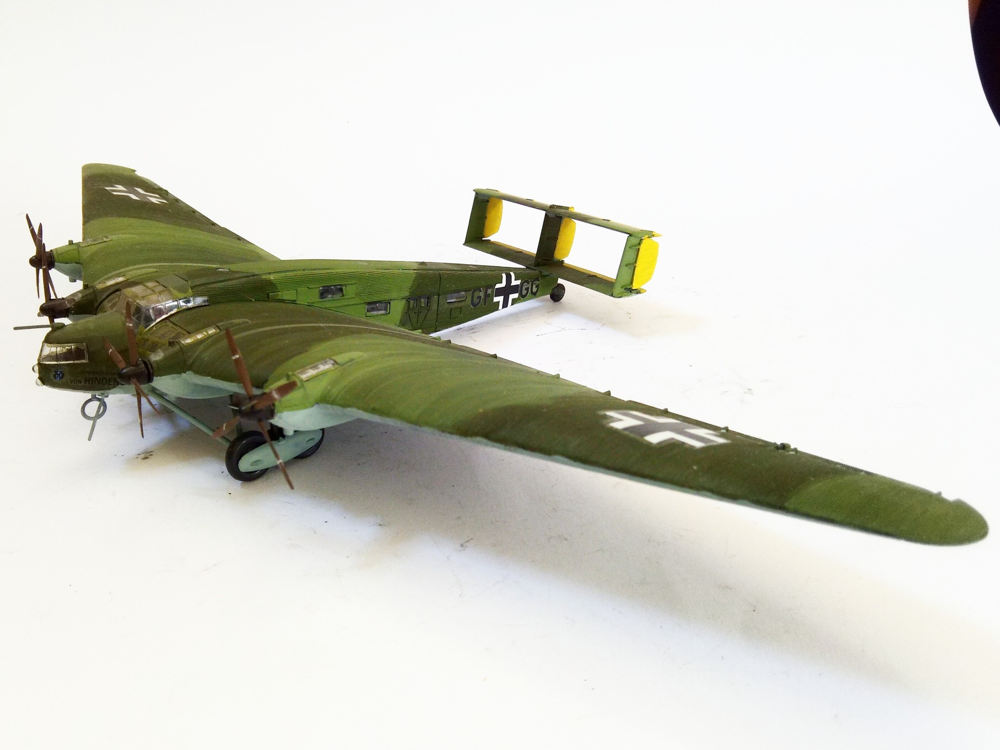

Aerei · scale model archive
Junkers G38ce II
Junkers G38ce II — Kit: Revell, Scale: 1/144. Kampfgruppe zbV 107 October 1940 #1/144 #Revell

Photo gallery
English description
Kampfgruppe zbV 107 October 1940
#1/144 #Revell
Descrizione italiana
Kampfgruppe zbV 107 ottobre 1940.